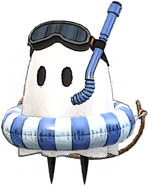
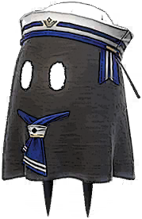

On this page, you can find a bunch of extra content for the game. This includes things that didn't make it into the main rest of the site such as other events and character stories and small details, as well as fanworks that are pretty great!